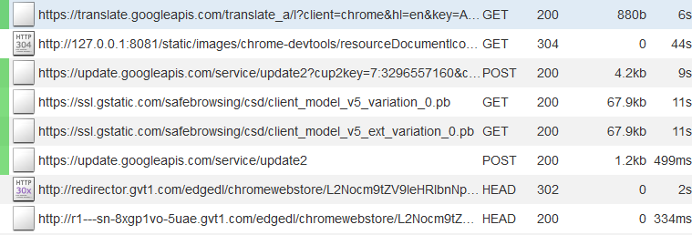
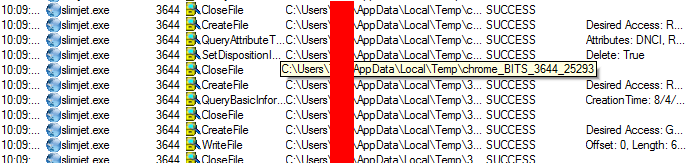
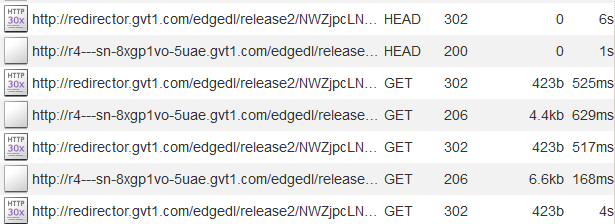
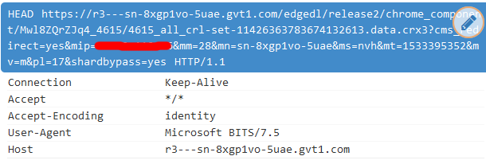
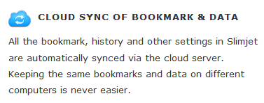

Slimjet
Slimjet é um clone do navegador SlimBrowser da FlashPeak que usa o Chromium como base.
Nível de Spyware: EXTREMAMENTE ALTO
O site da Slimjet afirma que está muito comprometido com a privacidade do usuário e que bloqueia o rastreamento do Google[1]. No entanto, esta afirmação não é verdadeira. Slimjet está constantemente enviando informações para o Google e se conectando aos serviços do Google. O Slimjet afirma estar preocupado com a privacidade, mas em última análise, retém quase todos os recursos de spyware encontrados no Google Chrome, bem como spywares adicionais adicionados pelo FlashPoint. Desta forma, Slimjet consegue implementar todo o spyware que se encontra em navegadores como o Google Chrome, só que em vez de uma empresa ter esta informação, é dividido entre várias empresas...
Ligando para casa
Embora em seu site, FlashPeak afirme que: "Slimjet não envia nenhum dado de uso de volta ao Google como o Chrome"[1] no momento em que o ligo com o MITMproxy em execução, sou recebido com isso:
Então, essa afirmação simplesmente não é verdadeira. Ele ainda contém muitos spywares do Google, se ainda estiver se contectando a tantos serviços do Google. O que é surpreendente é que ele não parecia se conectar a nenhum servidor explicitamente operado pelo FlashPeak quando eu o estava testando. Mesmo assim, afirma coletar informações sobre seus usuários para uso interno.[2] Portanto, deve estar "ligando para casa" e enviando informações para o GOogle. Talvez envie informações através de algum tipo de serviço web do Google?
O Mecanismo de Pesquisa Padrão é um Spyware
O mecanismo de pesquisa padrão é o Bing, que vende suas informações aos anunciantes. Se isso não for suficiente, é "servido do fpseek.com", o que significa que você não apenas está expondo suas informações ao Bing, mas também sendo registrado pelo fpseek, que tem sua própria política de privacidade[3]. Sempre que você pesquisa algo usando o mecanismo de pesquisa padrão, as solicitações são enviadas ao Bing e ao fpseek.
Portanto, você não está apenas compartilhando tudo com a Microsoft, agora há outra empresa analisando todas as suas pesquisas. Este é um mecanismo de pesquisa padrão excepcionalmente ruim por causa da quantidade de informações que são vazadas. A própria Fpseek é uma empresa que parece estar rastreando como os usuários interagem com anúncios e diz que usa as informações que coleta sobre seus usuários para: "
"...manter e melhorar a qualidade e operação do Software e Serviços, incluindo, monitoramento da visibilidade e interação com anúncios, resultados de pesquisa e outros produtos e serviços fornecidos pela Empresa. [3]
Assim, parece que suas pesquisas são enviadas para duas empresas de publicidade em vez de apenas uma. No mínimo, quando o mecanismo de pesquisa é alterado para uma alternativa como o DuckDuckGo, os pedidos para fpseek param.
Coletando informações sobre usuários
A Slimjet alega coletar "algumas informações anônimas de estatísticas de uso de recursos", e alega não registrar seu IP ou vender essas informações a anunciantes. No entanto, ainda é um spyware opcional.
Usando o serviço Microsoft BITS para fazer upload do histórico de pesquisa para os servidores do Google
Quando você iniciar o Slimjet, ele começará a usar o BITS (Background Intelligent Transfer Service), projetando para usar largura de banda sobressalente para transferir atualizações e outras informações. Essas requisições são enviadas entre o Slimjet e um servidor do Google, com confirmação do Process Monitor e do MITMproxy:
  As informações pessoais foram censuradas a partir dessas imagens. Não está claro para que isso serve especificamente, mas isso provavaelmenteestá sendo feito para implemnentar a "SINCRONIZAÇÂO DE NUVEM DE BOOKMARK E DADOS" anunciada no site da Slimjet. Provavelmente é assim que eles carregam todo o seu histórico de pesquisa e favoritos em seus serviços de nuvem, que parecem ser fornecidos pelo Google. Não há outros recursos ou requisições feitas que exijam que grande quantidades de dados sejam enviadas para um servidor externo dessa maneira, portanto, por processo de eliminação, essa é minha teoria sobre como ela é implementada.
Obviamente, você pode dizer que qualquer tipo de serviço para sincronizar seu histórico de pesquisa "na nuvem" é um pesadelo de privacidade. Agora, o Google e o Slimjet têm acesso ao seu histórico de pesquisa...